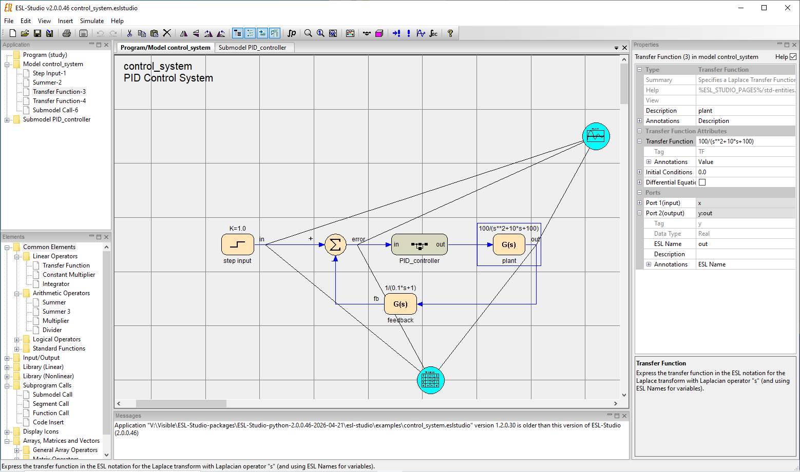
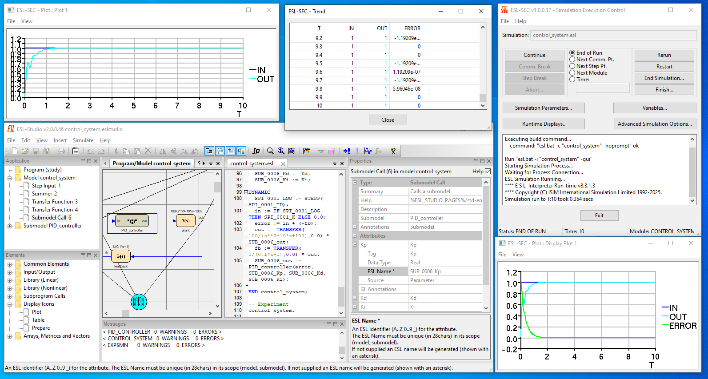

Overview of ESL-Studio
ESL-Studio is a desktop application to allow you to develop an ESL
simulation which is expressed in an ESL-Studio application and may be
saved as an .eslstudio file.
Window Layout
ESL-Studio is organised in a common desktop application style as a window with a menu-bar and toolbar, and a central "main view area" which can contain different "views". They can be selected with "tabs" at the top of the main view area. The main view area may be split to show views side by side, if desired, but they are always in the main view area. These views are primarily used to represent or model the simulation, for example as block diagrams, ESL Simulation Language code, package variable definitions and simulation parameter values.
The standard menu on the window menu-bar is detailed here. The standard toolbar provides short-cuts for most of the menu items.
There are also secondary views or "panes" primarily used for information or editing. They may be docked in various locations round the main view area, or floated free (as secondary windows). The main panes are:
- Application pane - this shows the structure of the simulation application - including the simulation entity objects in diagrams
- Elements pane - presents a structured menu of available simulation entities that may be put in the diagrams
- Properties pane - the properties of what may be selected - for instance a Model or Submodel for a diagram view, or specific properties for a selected simulation entity object
- Messages pane - an area that will show information or errors as the simulation application is being developed
There are also occasions when ESL-Studio will open a "modal dialog" (a window that has to be closed to let you continue) in order to let you enter information required by the current operation. For example to open or save a file, for printing settings, or for ESL-Studio preferences or options settings.
This image shows the standard layout for ESL-Studio - while editing an application.

Creating a Simulation Application
The basic structure of a simulation application normally consists of:
- a main model view, represented by a block diagram, comprising a Program and Model, which will normally correspond to an ESL STUDY and ESL MODEL when the simulation's ESL code is generated
- graphical subprograms (Submodel or Segment), which are also represented by block diagrams and generate ESL SUBMODEL or SEGMENT code
- textual subprograms, represented directly in ESL code
ESL Studio always has a diagram view for the main model. The Insert menu has entries to allow you to create new subprogram diagram or textual subprogram views for your application.
Other components of a simulation application include Packages (which generate ESL PACKAGEs) and the set of Simulation Parameter values for a Model (to be set initially when running the ESL MODEL in the simulation).
Note
Certain items, which are normally expressed in title case in ESL-Studio, correspond to items in the ESL Simulation Language, where they are normally expressed in capitals.
For example, in ESL-Studio, a Model is represented by a diagram view, containing connected simulation elements, and with a set of properties, which corresponds to an ESL MODEL subprogram code block.
Developing a block diagram
In addition to the initial main model view, you can insert diagram subprogram views from the main menu. Usually you will Insert > Submodel to insert a new (blank) Submodel diagram. There are also Insert > Model (as a Study Program can have more than one Model), and Insert > Segment to insert the appropriate subprogram diagram.
When you have a diagram selected in the main view area you can add simulation entities to it from the tree view in the Elements pane. You select an entry and drag it across to the desired location in the diagram (or double click to send it to the centre of the view).
There is also a small set of simulation entities, and other graphical objects, which may be inserted via the context menu, obtained by a right mouse click, on the diagram background.
Note
The ESL User Guide and Tutorial document, available on the ESL Software website documents page, covers developing block diagrams in Chapters 2 and 3 (for ESL-Studio 1.2.0.30).
Connecting simulation entities with signal lines
Most simulation entities have "ports" which are where signal lines can be connected. These correspond to ESL data types (Real, Integer, Logical) and may be for input to or output from the simulation entity. Non-scalar ports and signal lines also have a dimensionality, and can connect to ports with compatible dimensionality.
To make a connection, select a simulation entity connection port (at the end of its stem), with a left mouse click, to see a signal line extend tracking the pointer as you move the mouse.
To join it to another simulation entity complete the connection on the destination port with another left click. ESL-Studio will check that the connection is valid and if so you will see a slight flash of the connection port when the signal line is properly connected to it.
If, while extending the signal line, you left-click on the diagram background, this will establish a node on the diagram - but continue extending the signal line from there.
Tip
Signal lines started in error can be abandoned by a right mouse click.
Signal line nodes on the diagram background are additional connection points, and subsequently a signal line extending from a later simulation entity may connect to the node, so long as the signal connection would be valid.
Existing signal lines and nodes can be removed through their appropriate context menu (obtained with a right mouse click on the object).
Tip
In general, if you make any mistakes editing in ESL-Studio, the most straightforward way to get back is to Undo those changes in the undo/redo stack. This can be done via the Edit > Undo menu, or by clicking the equivalent toolbar icon, or, in a diagram, the key combination Ctrl-Z.
Setting properties for objects on the diagram
Most objects on a diagram have properties, which will appear in the Properties pane when the object has been selected in the diagram (for example by left mouse clicking on the object).
Note
If you click on the diagram background the Properties pane will show properties for the subprogram being represented by the diagram view.
A simulation entity may have a set of properties for its "Attributes" - values which control how the simulation entity behaves in the running simulation (by generating the appropriate ESL code for the simulation entity).
Tip
Attributes have a "Tag" component, usually a short fixed text, that identifies the attribute, and forms part of the ESL variable name that it corresponds to in the generated ESL code. This may be helpful in tracking down problems with ESL code generation, compiling and running.
A simulation entity will also have a set of compound properties for its "Ports" - values relating to how the simulation entity connects, via signal lines to other simulation entities, and include setting a specific ESL name, for an output port (to be used in the generated ESL).
Many properties, or components of compound properties, support "Annotations". These allow you to specify the property or component(s) to be displayed on the diagram near the graphical object it refers to. For example the Description of a simulation entity, or the ESL name for an output port. You simply check (click in the checkbox) for the annotation and the text for it will appear in a default location on the diagram. You may move it by double-clicking on the annotation text to select it, and then you may drag the text to a new position (relative to the object it refers to) holding the left mouse button down on it and moving the text with the pointer till you release the mouse button. You may also change the text properties such as font and colour.
The properties are covered in more detail here.
Input and Output Arguments
There is a set of Input and Output Argument simulation entities used to define the inputs and outputs for diagram subprograms.
The "Arg Name" (Tag "ARG") attribute value will correspond to the ESL argument variable name, when the ESL code is generated, for the subprogram inputs and outputs in the subprogram "signature", that is the ESL declaration specifying the argument types and their local names. If it is left unset, ESL-Studio will use a generated ESL name for the variable formed from the identification of the simulation entity.
Input and Output Arguments for Submodel and Segment subprograms will normally be realised as Ports for a subprogram Call simulation entity (on another subprogram diagram), when the Call is set for this subprogram.
Input Arguments have the (boolean) attribute called "Attribute" (Tag "ATTR") which may be checked to specify that the input argument will be 'CONSTANT' in ESL and thus be an attribute for a subprogram Call for this subprogram, rather than an input port if "Attribute" is unchecked.
Note
You may also use Input and Output Arguments in the diagram for the main model, in which case the default ESL generation is for READ and PRINT statements in the generated Experiment corresponding to the arguments. You may, alternatively, specify your own Experiment for the Program to call the generated ESL MODEL with the desired values. ESL-SEC will prompt you for values for READ statements when invoked when Started or Restarted and print a message for PRINT statements when the simulation is expressly Ended or Finished.
Subprogram Calls
A subprogram Call is special kind of simulation entity - there are three such Calls: Submodel Call, Segment Call and Function Call. A subprogram Call allows you to specify an instance of a subprogram (Submodel, Segment or Function) which will later be a call to that subprogram in the generated ESL code.
When you have inserted a subprogram Call into the diagram, or selected it, its properties, in the Properties Pane, include the appropriate subprogram property - initially blank. This has a "drop-down" list from which you may select from the set of subprograms of that type, which may be diagram or textual subprograms, that have been defined or imported into the application.
When the subprogram property is assigned, the subprogram Call's appearance and properties, attributes and ports, are updated to reflect the "signature" of the subprogram.
Note
A Function cannot be defined by a diagram, and can only be incorporated (imported or inserted) as ESL code. It corresponds to an ESL PROCEDURE which has a RETURN type declared in its "signature".
Display Icons
There is a set of Display Icon simulation entities, Plot, Table & Prepare, which are used to set up displays - runtime plots, tables ("Trend" or "Monitor" style, or to a "tabulate" text file) and "prepare" files (which record the data accurately (in binary) from runs of the simulation).
You specify the data items for the display by clicking on the centre of a display icon object, and an instrumentation line will extend. This can be processed in a similar way to signal lines, but you connect it (directly or indirectly) to a signal line output port of a normal simulation entity.
Properties for display icons include giving it a Title, specifying the Update rate for the display when the simulation is running, and, for Plot, specifying how the axes should be setup.
Incorporating textual ESL code
The normal way you would incorporate textual ESL code into an ESL-Studio application is by importing one or more subprograms. This is done by inserting a Textual Subprogram(s) view in the main view area and there are two options for this, ESL Import, for entering the ESL code directly into the application, or File Import for linking to an existing file containing the code.
There may be special circumstances in which you need to include some ESL code inserted into the code generated by a diagram subprogram. This is done with the special Code Insert simulation entity.
Importing ESL code subprograms
The Insert > Textual Subprogram(s) > ESL Import menu item is used to create a new editable text view in the main view area. You may edit the code in the view using standard text editing operations. You can also open a basic text modal dialog to show or edit the code from the 'ESL' property for the view.
You may commit the code being edited into the application via the context menu in the text view, and, in any case code changes will be committed when you move the mouse pointer away from the text view. When the commit takes place ESL-Studio performs basic code checks to validate the subprogram "signature" and may show errors or warnings in the Messages pane. For severe errors it will reject the changes, for less severe issues it does not prevent the edits being committed. This will allow you to commit invalid code which you plan to 'tidy up' later. Of course, any such code that remains when the simulation is going to be run may fail in ESL generation or compilation stages.
The context menu in the ESL Text view has a number of options for editing the code, and displaying it, and searching the text. It also has options 'Show code checks' and 'Run ESL compiler'. The 'Show code checks' option displays the output from the last run of code checking. The 'Run ESL compiler' option, saves any changes and does the basic code checks, and sends the text to the ESL compiler for syntax checking. These options open (if not already) a small pane to show the results.
Importing File subprograms
The Insert > Textual Subprogram(s) > File Import menu item is used to create a new read-only text view in the main view area. You can open a file selection dialog and select an ESL file to be imported as a whole. The basic code checks are run on contents of the file and if accepted the contents are displayed in the text view.
The context menu in the ESL Text view does not support edit operations, but has the options for displaying code, and searching the text as for the ESL Import. It also the has options 'Show code checks' and 'Run ESL compiler'.
Code Insert
The special Code Insert simulation entity allows you to plant ESL code in the code that is generated for the subprogram diagram. This may be wanted, for example, to integrate the diagram's code with an imported file (as when it is not possible or desirable to adapt it for this application).
A Code Insert simulation entity has special Code Insert properties to specify where to place the insert in the generated subprogram code (that is in what section - for example: in the declarations, or initialisation sections, or as procedural code in the dynamic or the "STEP" or "COMMUNICATION" regions).
The code is normally inserted at the end of the generated code region. For proper interoperation with generated code, it may be necessary to specify the insert position to be at the beginning. The ESL code block to be inserted can be entered and edited by opening a basic text modal dialog.
A Code Insert simulation entity (in an appropriate region) may have output ports that may be connected with input ports to other simulation entities in the diagram subprogram. You specify the output types, and then set the ESL name for each such port, which is how it is identified in the inserted code.
Packages
Packages are essentially named blocks of ESL variable definitions, which may be shared across other subprogram (diagram or textual).
Packages may be defined in ESL-Studio in a Package view, essentially by extending and filling in a form, or they may be defined and imported as textual ESL code blocks or in external files.
Tip
We recommend that you do not mix ESL textual PACKAGEs and textual subprograms in the same ESL code block (or file), as this may lead to unexpected failures to determine the dependency order of the code block.
The Insert > Package menu item is used to create a new Package view. It will assign it a unique ESL name, which you can edit to a more suitable ESL name.
A "plus" button lets you add a new default ESL Variable entry, with a set of properties, which you can expand and edit.
The Data Type property must be one of the basic ESL data-types: Real, Integer or Logical. The Kind of Variable property is one of Parameter, Constant or Variable corresponding to the ESL PARAMETER, and CONSTANT keywords for an ESL variable declaration and Variable for when neither keyword is wanted. A Constant variable can only have its initial value, it cannot be changed in a run of the simulation at all. A Parameter variable is similar to a Constant, but its value can be changed explicitly before a run of the simulation, for instance via the ESL-SEC program.
Note
For a discussion of the Dimension and Value (an ESL Value) properties see here.
A diagram subprogram declares it will use a package, and can refer directly to its variables, by checking its name in the Uses Packages properties selection box. A textual subprogram, similarly, specifies one or more Package names via the USES statement.
Running the Simulation
You can set up how you want your application to run the simulation in the Setup view, which is available via the View > View Simulation Setup menu item. Options available in the Setup view include just generating code (not trying to run it) when the Run is invoked, and displaying the generated code in a (read-only) ESL Text view. It has options to specify complex build and run commands, but the usual (default) way is to compile the generated ESL code to an intermediate form and run the ESL interpreter.
To run the simulation for your application select the Simulate > Run Simulation menu item (or press the toolbar run icon).
By default, ESL-Studio (which will ask to save any uncommitted edits) will generate the ESL code for your application. It will then run the ESL compiler and interpreter. Of course, if it encounters any errors in any of these steps, ESL-Studio will put the appropriate messages in the Message pane, and you can go back to editing the application.
Note
ESL-Studio will not generate any subprograms that it does not call from the main model or a subprogram called from that. It works out the dependency order in which to generate the subprograms (or blocks of textual subprograms) such that called items are declared in the code before they are to be used.
Also, in the case of simulation entities using arrays, matrices or vectors, where ports and signal lines may not have fixed dimensions for their dimensionality declaration, that is they are "generic" and use the asterisk ('*') wildcard notation (for an arbitrary number of elements in a given dimension) or dot-dot-dot ('...', for an ellipsis) universal notation (for any number of dimensions, 1..3, and any number of elements), ESL-Studio generally has to determine the precise dimensionality for the ESL variables in the generated code.
Tip
ESL-Studio will try to determine the dependency order and any dimensionalities, using Call simulation entities, the connections between simulation entities and various property settings.
Often errors occur in the compilation due to a missing connections.
Something that may determine the dependency order, particularly between diagram generated code and textual imports, are missing explicit LIBRARY references.
Failure to fix dimensionalities can usually be resolved by an "upstream" output port's 'Fix Dimensions' property.
If successful, ESL-Studio will invoke the ESL-SEC (Simulation Execution Control) program. This has many features to set up more displays (in addition to any defined in the ESL-Studio application) and to monitor simulation variables and step through the simulation.

Refer to ESL-SEC - Simulation Execution Control for details on how to control the simulation - for example to step through the integration steps - and examine and modify ESL variables in the simulation, and to set up runtime displays such as plots or "prepare" files which may be used in post run analysis.
Post Run Analysis
You may have accumulated a set of recorded data, after you have run a number of runs of simulations (with varied parameter values) or different invocations of the application (trying out various modifications), or, indeed completely different simulations (which may have some relationship to be investigated).
The recorded data may be in the form of display files, such as accurate (binary) "prepare" files (generated from the ESL PREPARE statement or recorded when running a simulation with the ESL-SEC program), or "tabulate" format files (for example generated from the ESL TABULATE statement or recorded via ESL-SEC, or from other data that has been converted to that format).
Note
Prepare files retain full computer precision of data saved whereas in tabulate files precision is limited to the number of significant figures recorded textually.
The ESL-Displays program supports post run analysis and allows you to flexibly investigate and explore the data visually by composing plots across different data-sets.
Refer to ESL-Displays - Post Run Analysis for details - for example for loading display files and specifying plots.